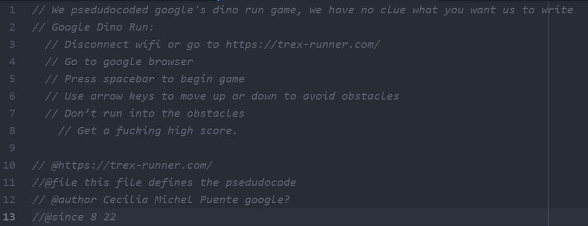
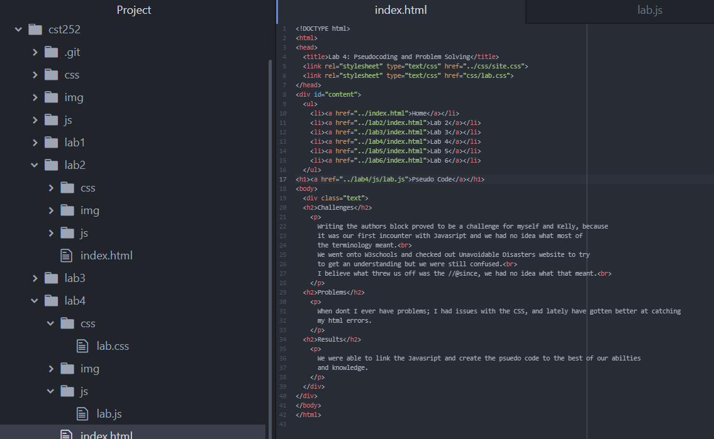
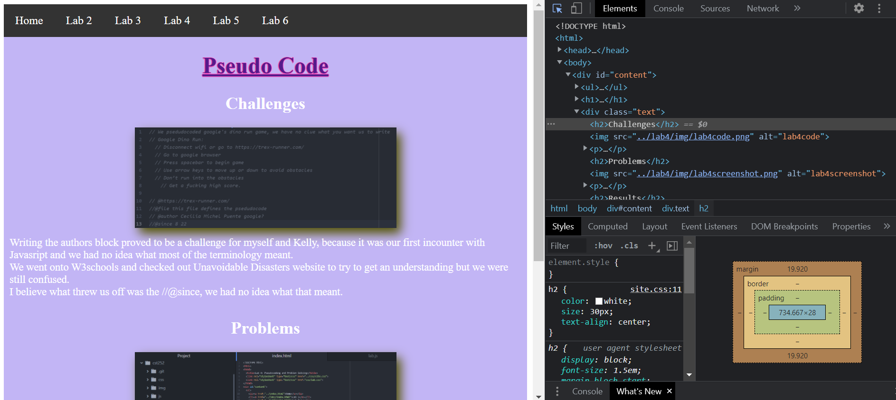

Challenges

Writing the authors block proved to be a challenge for myself and Kelly, because
it was our first incounter with Javasript and we had no idea what most of
the terminology meant.
We went onto W3schools and checked out Unavoidable Disasters website to try
to get an understanding but we were still confused.
I believe what threw us off was the //@since, we had no idea what that meant.
Problems
When dont I ever have problems; I had issues with the CSS, and lately have gotten better at catching my html errors.
Results
We were able to link the Javasript and create the psuedo code to the best of our abilties and knowledge.